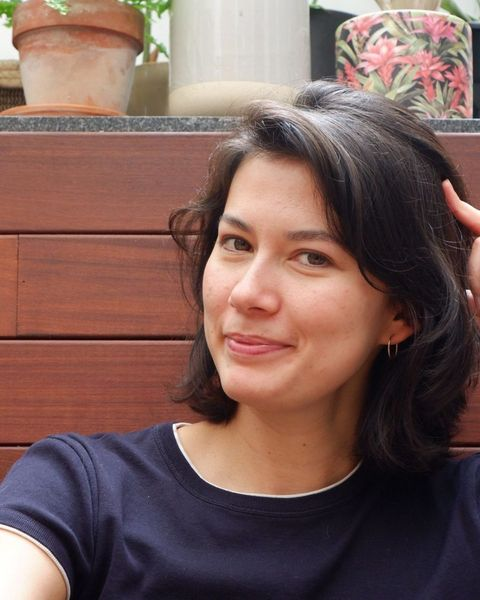

Dear you,
You know something has to change. You just don’t know how.
I’m Tania, a relationship coach. I’ll help you find the next step, and take it with you.
Maybe this sounds familiar
It could be with a partner, a parent, a friend, or someone at work. You care about them. But lately, it feels hard.
“We keep having the same argument.”
“I talk, but I don’t feel heard.”
“Maybe part of the pattern starts with me.”
If you nodded along, you are not failing. You are human. And these are things we can work on, together.
(more common than you think)
This works best if you’re ready
(be honest with yourself here)
- You want to change how you act, not only talk about what happened.
- You’re willing to look at your own part, not just theirs.
- You’re tired of paying the price for the same pattern.
If right now you mostly need someone to listen, that’s okay. A good friend or a therapist might be the better fit for this moment. When you’re ready to do things differently, I’ll be here.
What we work on
-
Communication
Saying what you need without blame. Listening so the other person feels heard. Even when it’s tense.
-
Conflict
Fighting less, and fighting fairer. And finding your way back to each other after an argument.
-
Attachment patterns
Why you hold on tighter, or pull away, when things get hard. Once you see your pattern, old habits stop deciding for you.
How it works
-
A free 20 minute call
We meet on video. You tell me what’s going on. I listen, and explain how I can help. We’ll also check together if now is the right time for you. Then you decide, in your own time.
-
Sessions that move you forward
60 minutes, one to one, by video (or in person, if you’re in Porto). Every session ends with a clear next step to try. You build a toolkit you can keep using long after we finish. And yes, sometimes a little homework.
-
Step by step, things change
Change usually starts small. One calmer conversation. A quicker way back after a fight. Feeling a little closer again.
A little about me

I’m Tania. I have lived in [COUNTRIES OR CITIES], and I know how hard it can be to feel understood, even by the people we love most.
I’m a certified relationship coach ([CERTIFICATION]). I know a lot about how communication, conflict and attachment work. But I’m not the expert on your life. You are.
My job is to help you find your own answers, with good questions, honest reflection and tools that fit you. I won’t judge you, and I won’t take sides. The answers you find yourself are the ones that tend to last.
When I’m not working, you’ll probably find me [ONE REAL, SPECIFIC DETAIL].
The practical part
€600
for 6 sessions
€1,020
for 12 sessions
best value
Every session is 60 minutes, one to one, online by video (or in person in Porto).
Your first 20 minute call is free. No pressure to book after.
I coach in [LANGUAGES], with times that suit [TIME ZONES].
Shall we talk?
Whatever is happening right now, you don’t have to carry it alone. Leave me a few details, and I’ll get back to you to set up your free 20 minute call.
Thank you. I’ll be in touch soon.
Warmly, Tania
Warmly,
Tania
P.S.A few questions people ask
Is this therapy?
No. Therapy often looks at the past and at mental health. Coaching focuses on skills for your relationships today. If I think a therapist would help you more, I’ll tell you honestly.
Do you work with couples?
Not right now. I work one to one, just with you. We focus on your side: how you speak, listen and respond. When one person changes the pattern, the other can respond differently too.
What happens in the free call?
We talk for 20 minutes on video. You tell me what’s going on and ask anything. No sales pitch, and no pressure to book.